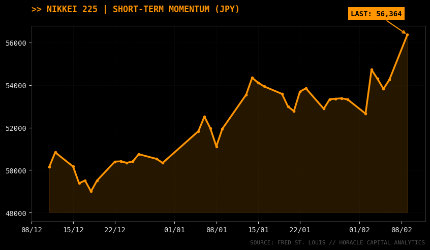

Dans un contexte de conflits géopolitiques et de querelles médiatiques, nous allons essayer de faire le tri. Le rapport d'aujourd'hui traite davantage des différentes politiques attendues par les banques centrales et des enjeux. Évidemment, nous couvrons les différents marchés, commodités, actions ou encore cryptos, où les pertes commencent à se faire ressentir.
Le momentum actuel semble dirigé par le nouveau visage de la FED, Kevin Warsh, dont la nomination a poussé le marché à intégrer une posture plus accommodante. Cependant, le dollar reste porté par des données macroéconomiques solides, créant une tension entre les rumeurs politiques et la réalité des indicateurs de production.
1. USD : Le tournant Kevin Warsh & l'ISM
Avec un nouveau président de la FED dévoilé vendredi dernier, les États-Unis sont décidément dans un momentum dovish. En effet, Kevin Warsh, initialement assez hawkish, a vu son fusil changer d’épaule durant ces dernières années, l’entraînant ainsi aux côtés de D. Trump. Le marché a déjà intégré cette élection dans l’évaluation du dollar avec une forte baisse sur les actifs corrélés au dollar.
Pourtant, la semaine dernière, l’ISM (manufacturing index) a été publié largement au-dessus des attentes avec 52,6 ; cette valeur demeure la plus haute depuis août 2022. Étant donné le ton hawkish de la Fed sur le mois passé, il faut s’attendre à une réelle détérioration du marché du travail américain afin de pouvoir songer à anticiper une baisse des taux d’ici juin.
2. Japon : L'ère Sanae Takaichi et la fin du Yield Curve Control ?
En ce début de semaine, les marchés Japonais sont drivés par l’élection écrasante du parti Liberal-Démocrate dirigé par Sanae Takaichi. Avec une volonté d’un Japon fort et résilient, Takaichi a redonné confiance aux investisseurs nationaux comme étrangers, se traduisant par une forte hausse du marché Japonais.

Les enjeux de ces élections sont importants : la nomination du parti pourrait orienter la production vers une phase d’expansion. Cette forte appétence pour la croissance aurait des impacts directs sur le taux d’inflation. Une inflation anticipée plus haute pourrait pousser la BoJ à augmenter ses taux d’ici peu (dans le courant de l'année 2026), mettant ainsi en danger les stratégies de paires trading et favorisant une appréciation du Yen.
3. Analyse par Zones Monétaires : Carry Trade et Division des Banques Centrales
Zone Euro (EUR) : Joli début de semaine pour l’EURUSD, qui atteint les 1,189. Le communiqué de la BCE souligne une inflation proche de la cible de 2 % et un chômage contrôlé (6,2 %). Pour l’instant, la BCE s’octroie le droit de décider après chaque réunion sans plan prédéfini. Attention au rapport COT qui témoigne d'un intérêt massif (+163 361 contrats LONG), créant un risque de liquidation.
Royaume-Uni (GBP) : Le ton est un peu plus dovish de la part de la BoE avec aucun changement sur les taux directeurs, mais un vote serré (5-4). On note une forte appétence pour les valeurs IA qui pourraient accélérer la productivité. Cependant, la peur que le pays parte encore plus vers la gauche sous Keir Starmer provoque une hausse des taux d'emprunt sur 10 ans.
Australie (AUD) : La RBA se montre hawkish avec une hausse à 3,85 %. Elle reste dépendante des développements en Chine et de la politique de la Fed. Les relations de Carry trade pourraient être mises en péril si la FED garde des taux hauts trop longtemps, limitant le potentiel de l'AUD malgré la hausse domestique.
Canada (CAD) : Le marché du travail montre des signes de fatigue critique avec une perte de 24,8k emplois. Cette donnée place la Banque du Canada dans une position d'urgence pour réduire ses taux, affaiblissant le CAD face à un dollar américain qui reste fort.
4. Matières Premières & Crypto : Chute vertigineuse et purge du levier
Sur les commodités, après l’ascension est venue la chute... une chute plus que vertigineuse la semaine dernière suite à la nomination de Kevin Warsh. Néanmoins, les métaux précieux demeurent assez résilients avec un léger retracement haussier en ce début de semaine ; le prix range sur l’or et l’argent.
Côté Crypto, on observe une énorme baisse avec le prix du BTC passant en dessous des 70 000. Cela remet en cause la confiance dans cet actif et souligne une purge massive du levier, impactant la pérennité des investissements liés à la blockchain.
| Actif | Niveau / Tendance | Observation |
|---|---|---|
| Bitcoin (BTC) | < 70 000 $ | Crise de confiance et deleveraging massif sur le marché. |
| Or (Gold) | Range | Résilience face à la dépréciation relative du dollar. |
5. Actions et Sentiment de Marché : Le choc de l'IA
Les entreprises tech ont connu un choc la semaine dernière, relativement aux craintes liées à l’IA et au financement de cette dernière. Les positions nettes short demeurent relativement élevées sur le SP500, en attente sûrement de résultats macro plus concluants concernant le marché de l'emploi américain.
🎯 IDÉES DE TRADES & OPPORTUNITÉS
AUD/USD : Surveillez la solidité de l'industrie US. L'effet Warsh pourrait limiter la hausse de l'AUD malgré son taux à 3,85 %. Risque de Carry Trade en péril.
Rapport COT (Sentiment des Spéculateurs) :
- Euro : Intérêt record avec +163 361 contrats LONG. Cependant, le marché semble trop "chargé", attention à un retournement si les NFP US sont trop solides.
- Yen : Appréciation probable suite à la victoire de Takaichi. La fin potentielle de la politique ultra-accommodante de la BoJ rend le Yen attractif.
- S&P 500 : Positions shorts élevées. Le marché attend une réelle détérioration du chômage (attendu à 4,4 %) pour pivoter.
Léo Lombardini
Fondateur & Quant Analyst
Étudiant à l'EDHEC Business School en Marchés Financiers. Passionné par l'intersection entre la modélisation macroéconomique fondamentale et l'analyse quantitative systématique.
Suivre sur LinkedIn>> Lire aussi
Sources & Données
- Rapport de Politique Monétaire BoEn (Février 2026)
- RBA Monetary Policy Statement - Février 2026
- ISM Manufacturing Index - États-Unis
- Rapports Commitments of Traders (COT) - CFTC
- Analyse des élections LDP Japon - Sanae Takaichi